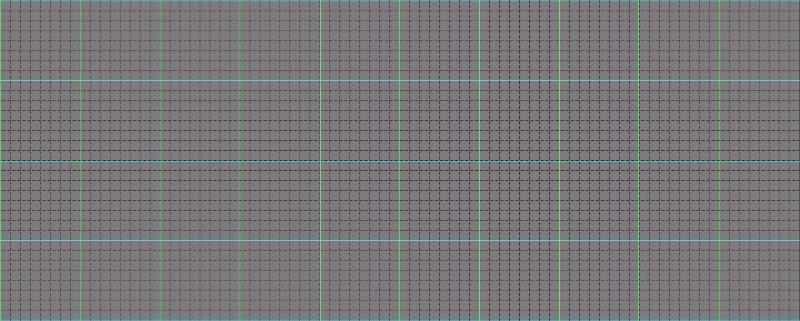
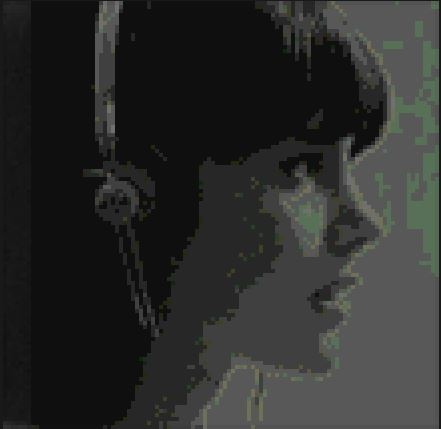
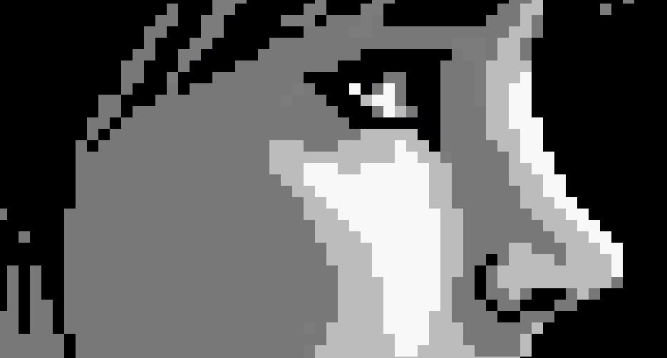
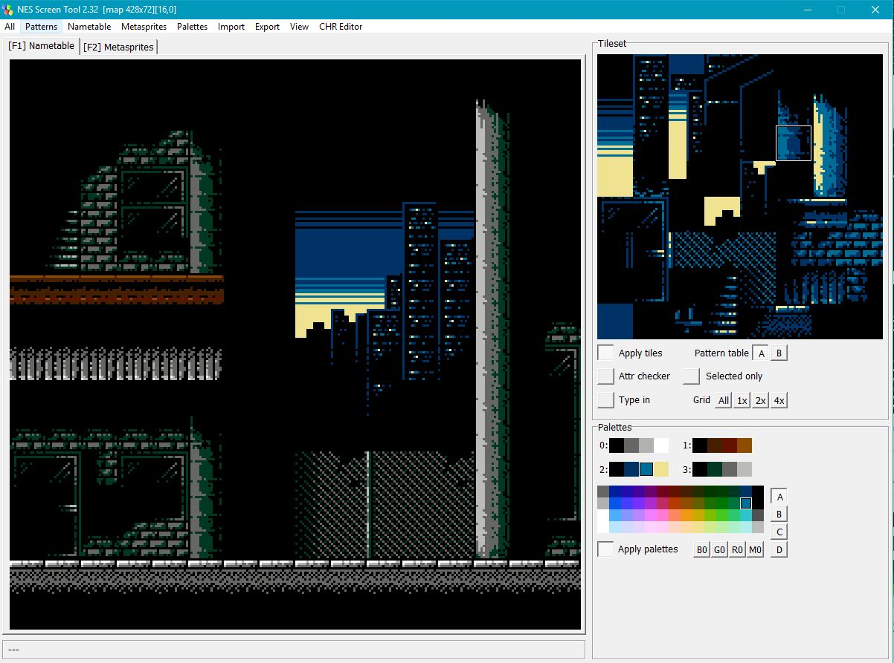

As a designer I think the cool thing about designing for the NES are the limitations. 4 color palettes, frame limits, tile sets and 512k capacity its a great challenge for any designer. Here are some examples of my work.
I usually start in photoshop with a 8x8 pixel grid. This helps me work within the tile set limitation of the nes. 
If I need to reference a photograph I pull it in to photshop and use the posterize tool to take the colors down as far as I can without loosing too much fidelity. 
To draw I use the pencil tool because thats the only way I know how to create pixel perfect art. 
When I'm mostly happy with the design. I begin porting it over to Shirus screen tool. This tool lets me create tile sets and name tables that I can use directly with the NESmaker tool to create the acutal game.
For level design I usually just start right with Shirus screen tool. 
Just some screeshots and overviews of my works in progress.
A sci-fi platformer about a destopian future where nothing is as seems.